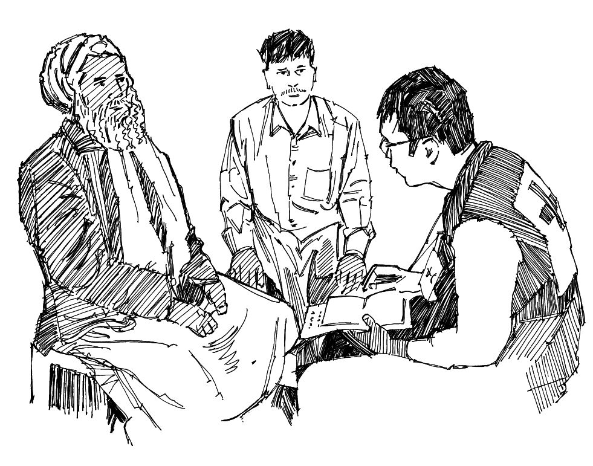

Certaines maladies sont si dangereuses ou contagieuses qu’il est nécessaire d’isoler les malades pour éviter qu’ils transmettent l’infection à d’autres. L’isolement consiste à séparer les malades de ceux qui sont en bonne santé.
Isoler les patients n’est pas un emprisonnement. Cela ne doit pas être pratiqué sous la contrainte, mais toujours avec l’accord des patients. Vous devez expliquer aux patients et à leur famille pourquoi l’isolement est nécessaire.
Ce que vous devez savoir
Dans les épidémies d’Ebola , de èvre de Marburg , de èvre de Lassa , de peste , de variole du singe et de syndrome respiratoire du Moyen-Orient , il est parfois nécessaire d’isoler les malades pour limiter la propagation de la maladie.
Dans de tels cas, une seule personne (munie des protections adaptées) s’occupe du patient, en vue de limiter les risques d’infection. Cette mesure est appelée « soins en isolement ».
Cette personne dispensera des soins, alimentera le patient, lui donnera à boire et communiquera avec lui.
Ce que vous pouvez faire
S’il est décidé que l’isolement et les soins en isolement sont nécessaires, vous poursuivrez votre mission de surveillance active, en tant que volontaire, en recherchant des malades (voir la che action 1).
Lorsque vous découvrez un cas, vous devez expliquer au malade et à sa famille en quoi l’isolement est nécessaire. Vous ne pouvez pas les y obliger et la décision de la famille doit être respectée. Si vous leur expliquez que cette mesure vise à protéger les autres, y compris les membres de la famille du malade, il sera peut- être plus facile pour le patient et ses proches de comprendre pourquoi on lui propose l’isolement.
Il faut expliquer à la personne chargée de s’occuper du patient en isolement comment le soigner et se protéger. Un équipement de protection adéquat doit lui être fourni.
Fournissez un soutien psychosocial à la famille (voir la che action 19). L’isolement d’un être cher peut être très dif cile à vivre, non seulement pour le patient mais aussi pour sa famille.
Essayez d’éviter que l’isolement ne devienne une cause de discrimination et de rejet social pour les patients et leur famille. Expliquez à la communauté pourquoi il est nécessaire. Pour lutter contre la discrimination, demandez l’aide des anciens et des dirigeants communautaires.
Assurez-vous que les personnes placées en isolement disposent de nourriture, d’eau et de soins de santé suf sants, et qu’ils béné cient d’une aide pour gérer toute perte de moyens de subsistance.

Parlez à la communauté et aux anciens pour éviter la discrimination et le rejet social
Messages communautaires
Voir les messages de la communauté suivants pour soutenir isolement des malades: